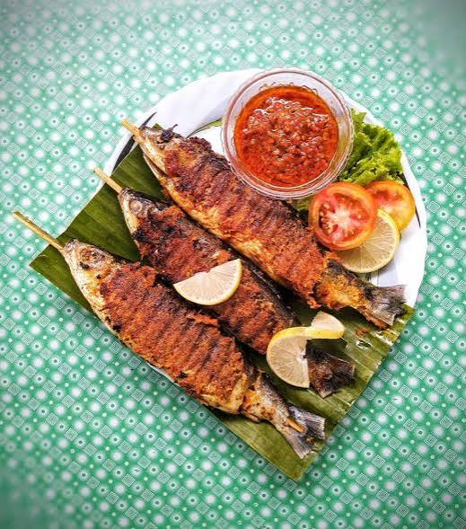
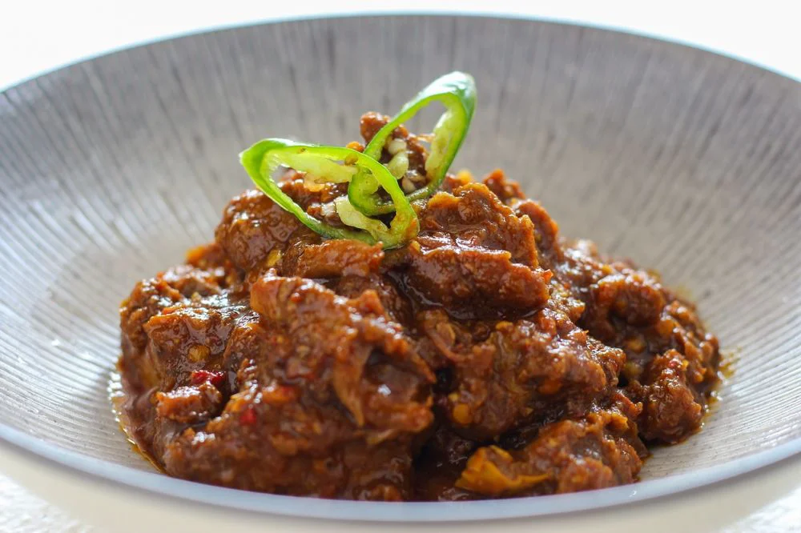
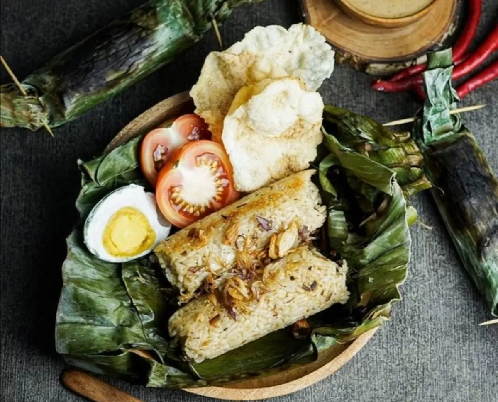

Sate Bandeng
Olahan ikan bandeng yang durinya sudah dibersihkan, dibumbui rempah, lalu dibakar hingga harum. Ikon kuliner Banten.
Khas Banten
Kota Cilegon punya cita rasa pesisir yang khas, mulai dari olahan laut segar hingga jajanan tradisional Banten yang jarang ditemukan di daerah lain.

Olahan ikan bandeng yang durinya sudah dibersihkan, dibumbui rempah, lalu dibakar hingga harum. Ikon kuliner Banten.
Khas Banten

Gulai kambing dengan bumbu khas Cilegon yang kaya rempah. Biasanya disajikan saat acara adat atau hari besar.
Khas Cilegon

Nasi dengan kuah santan dan potongan sumsum sapi, disajikan hangat dengan taburan bawang goreng.
Khas Banten
Jajanan tradisional berbahan tepung beras dan gula merah, bertekstur lembut di tengah dan renyah di pinggir.
Jajanan Pasar